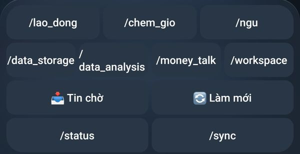
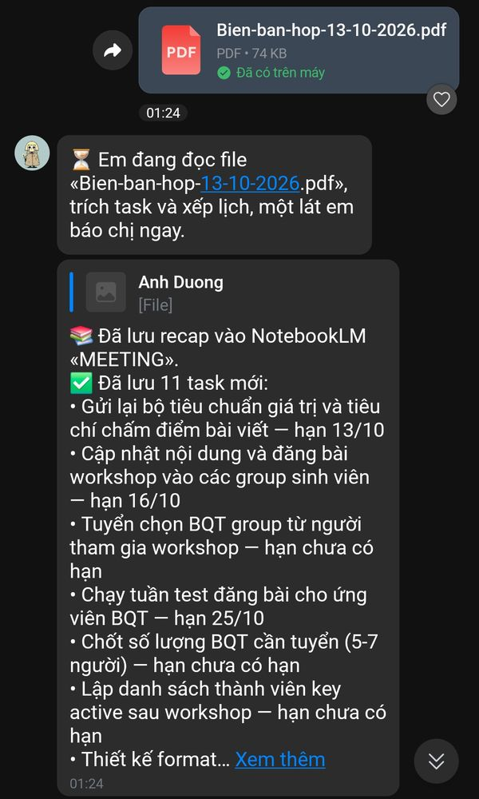
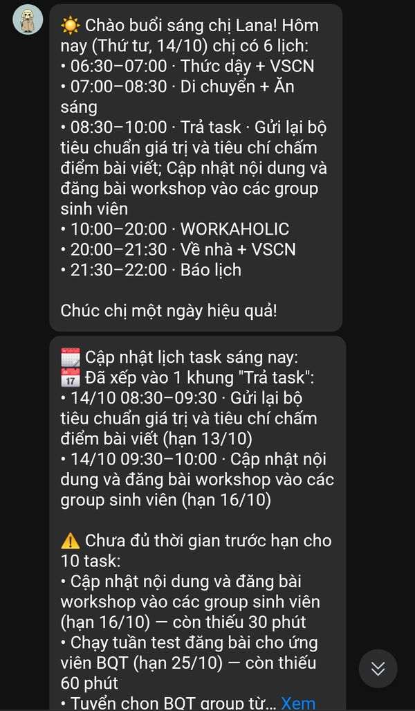
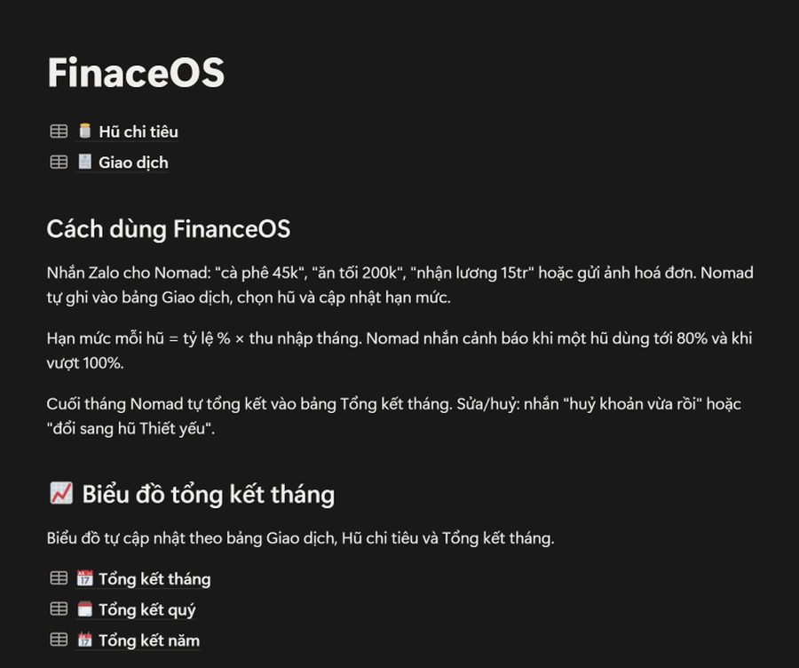
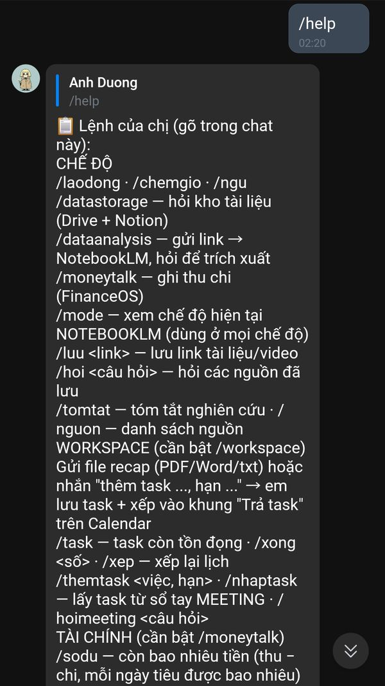
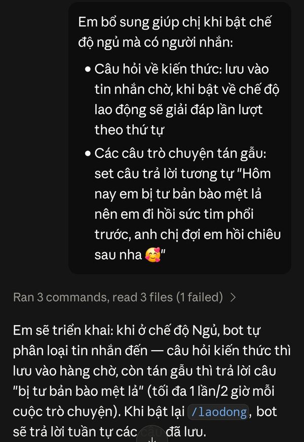

Dựng trợ lý 24/365 cho người đi làm
7 bước đi từ "việc lặp lại mỗi ngày" tới một con bot tự chạy, bot Zalo mình đã dựng để chứng minh nó dùng được thật, và 10 prompt để bạn tự làm.

Một ngày đi làm bị cắt vụn bởi
những việc nhỏ lặp lại
Tin nhắn hỏi lại
Cùng một câu hỏi về thông tin, tài liệu, quy trình được hỏi đi hỏi lại.
Lịch và việc trôi
Họp xong có task, nhưng task nằm trong biên bản, không nằm trên lịch.
Chi tiêu quên ghi
Cuối tháng mới hỏi "tiền đi đâu", vì ghi chép mất công nên bỏ dở.
Tài liệu rải rác
Notion, Drive, file Word: biết là có, nhưng tìm lại thì mất vài phút.
Mỗi việc chỉ vài phút, nhưng chúng lặp lại mỗi ngày và có quy tắc rõ. Đó chính là loại việc nên giao cho bot.
Trợ lý 24/365 = 4 năng lực ghép lại
Không phải một chatbot "biết nói". Một trợ lý thật sự cần đủ 4 khối dưới đây, và chạy kể cả khi máy tính của bạn đã tắt.
Nghe
Nhận tin ở kênh bạn dùng hằng ngày (Zalo), mọi lúc.
Hiểu
Một "bộ não" AI đọc ý định: hỏi, ghi chép hay ra lệnh.
Nhớ
Tra đúng dữ liệu của bạn, ghi nguồn, không bịa khi không có.
Làm
Ghi vào lịch, sổ thu chi, nhắc đúng giờ, báo khi có vấn đề.
Lộ trình 7 bước dựng trợ lý
Đi theo thứ tự: quyết định "giao việc gì" trước, rồi mới chọn công cụ.
Chọn việc
Việc nào đáng giao
Chọn kênh
Nơi nhận tin và nơi điều khiển
Bộ não
Model nào, trả tiền thế nào
Dữ liệu
Trả lời đúng, có nguồn
Chế độ
Ai được thấy gì
Chạy 24/365
Máy chủ, tự hồi phục
Vận hành
An toàn, chi phí, cải tiến
Chọn đúng việc để giao
Việc đáng giao cho bot thường thoả cả 4 tiêu chí:
- Lặp lại hằng ngày hoặc hằng tuần.
- Có quy tắc rõ: nói được thành câu "khi... thì...".
- Sai thì sửa được: không phải quyết định không thể quay lại.
- Dữ liệu đã có ở dạng số (Notion, Drive, lịch).
Nhắc lịch, nhắc hạn
Quy tắc theo giờ, rất hợp
Ghi thu chi
Lặp lại, sửa được
Tra tài liệu nội bộ
Có nguồn, kiểm được
Duyệt hợp đồng, chuyển tiền
Khó quay lại khi sai
Hai kênh: làm việc và điều khiển
Tách nơi bot "đi làm" khỏi nơi bạn "cầm lái" giúp bot gọn và an toàn hơn.
- Kênh làm việc: nơi bạn và người khác đã quen nhắn, ví dụ Zalo.
- Kênh điều khiển: chỉ chủ bot dùng, ví dụ Telegram, để đổi chế độ, xem trạng thái, nhận cảnh báo lỗi.
- Bot chỉ nhận lệnh từ mã định danh của chủ, không theo tên hiển thị.
Cách kết nối kênh làm việc: cân nhắc đánh đổi
API / Bot chính thức
An toàn về điều khoản, ổn định; đổi lại ít tính năng hơn.
Thư viện mô phỏng
Nhiều tính năng hơn, nhưng có rủi ro bị khoá tài khoản: chỉ dùng tài khoản phụ.
Chọn "bộ não" vừa sức
- Model nhanh cho tin nhắn thường: rẻ, phản hồi trong vài giây.
- Model mạnh chỉ cho việc khó cần độ chính xác cao.
- Gói chat trả phí không kèm API key: bot cần API riêng, trả theo lượng dùng.
- Luôn đặt giới hạn chi tiêu tháng ngay khi tạo key.
Hỏi trước khi chọn
- Mỗi ngày khoảng bao nhiêu tin?
- Có cần đọc ảnh (hoá đơn, ảnh chụp màn hình)?
- Máy chủ có bao nhiêu RAM?
- Câu trả lời sai thì thiệt hại tới đâu?
Nối dữ liệu để bot nói đúng
Bước quyết định bot có đáng tin hay không.
- Chọn một nguồn sự thật cho mỗi loại dữ liệu: Notion cho ghi chép, Drive cho tài liệu, lịch cho thời gian.
- Cắt tài liệu thành đoạn nhỏ, mỗi câu hỏi chỉ đưa vài đoạn liên quan nhất cho AI.
- Mọi câu trả lời ghi nguồn (tên tài liệu).
- Không có dữ liệu thì nói "chưa có" và chuyển câu hỏi cho chủ.
Câu hỏi: "Biên bản họp 13/10 chốt gì?"
Tìm vài đoạn khớp nhất trong kho
Trả lời chỉ dựa trên các đoạn đó
Kèm nguồn, hoặc nói rõ "chưa có trong kho"
Chế độ và quyền riêng tư
Một con bot, nhiều "bộ mặt". Chế độ quyết định bot được nói gì, với ai.
- Chế độ công khai: ai nhắn cũng được trả lời, chỉ dùng thông tin có thể chia sẻ.
- Chế độ riêng tư: tài chính, tài liệu, task, chỉ phục vụ chủ trong chat riêng.
- Chế độ nghỉ: bot im lặng nhưng vẫn nghe lệnh của chủ.
- Bot xưng là trợ lý, không nhận là người thật khi bị hỏi thẳng.
Mọi người
Thông tin chung
Chỉ chủ bot
Tiền, task, tài liệu
Cho bot chạy 24/365
"Trợ lý" mà tắt máy là nghỉ thì chưa phải trợ lý. Cần 4 thứ:
Máy chủ luôn bật
Một máy chủ ảo (VPS) thay cho máy tính cá nhân.
Tự hồi phục
Lỗi hay khởi động lại máy, bot tự chạy lại.
Tự báo lỗi
Gửi cảnh báo về kênh điều khiển khi có sự cố.
Lịch chạy định kỳ
Nhắc việc, tổng kết theo giờ cố định.
Vận hành: an toàn, đúng ngân sách
- Đọc nhật ký trước, đoán sau: xác định lỗi nằm ở bước nhận tin, gọi AI, đọc dữ liệu hay gửi tin.
- Theo dõi chi phí từng tin, so với giới hạn tháng.
- Giữ kín khoá truy cập; lỡ lộ thì tạo khoá mới ngay.
- Sửa bot từ xa có duyệt: AI đề xuất, bạn xem rồi mới cho chạy.
- Sao lưu mã và dữ liệu định kỳ.
Dùng thật trong vài ngày
Ghi lại chỗ bot trả lời sai, chậm, im lặng
Sửa một chỗ, kiểm tra lại
Đo chi phí và mức tin cậy
Thêm việc mới khi việc cũ đã ổn
Checklist trước khi chạy thật
Đã chọn 1 việc cụ thể, viết được thành quy tắc "khi... thì..."
Kênh làm việc dùng tài khoản phụ; kênh điều khiển chỉ nhận lệnh từ chủ
API key đã đặt giới hạn chi tiêu tháng
Bot ghi nguồn và biết nói "chưa có" khi thiếu dữ liệu
Dữ liệu riêng tư chỉ mở cho chủ trong chat riêng
Đã thử khởi động lại máy chủ và bot tự chạy lại
Chỉ chia sẻ cho bot quyền nhỏ nhất cần dùng
Có sao lưu và có người duyệt các việc quan trọng
Một con bot, nhiều việc của người đi làm
Tin nhắn, lịch, task, chi tiêu và tài liệu nằm ở nhiều nơi. Cần một chỗ duy nhất để hỏi, ghi và được nhắc, ngay trên Zalo đang dùng hằng ngày.
Bot Zalo chạy trên máy chủ ảo, "bộ não" là model Claude nhanh (Haiku), nối Notion, Google Drive, Google Calendar, NotebookLM; điều khiển và nhận cảnh báo qua Telegram.
- 7 chế độ trả lời, tách công khai và riêng tư
- 5 mốc nhắc lịch, task tự động
- Sổ thu chi 5 hũ có cảnh báo
- Hỏi đáp trên tài liệu riêng, ghi nguồn
Bot nằm giữa, mọi thứ nối vào
Gặp Nomad Lanhmar
Trên Zalo: tài khoản bot Nomad Lanhmar, nhắn như nhắn một người bạn.

⤢Bảng điều khiển Telegram "Nomad LanhMar CPU"
- Khởi động xong, bot tự báo trạng thái: chế độ Workspace, Notion 1.045 đoạn, Drive 55 tệp / 3.333 đoạn, model claude-haiku-5-5.
- Đếm luôn hạn mức gửi tin (tin/giờ, tin/24h) và số câu hỏi nhận lúc ngủ.
- Tin ngoài dữ liệu được đẩy lên kèm 2 nút Trả lời và Bỏ qua; bot đã báo người nhắn chờ.
- Một bàn phím nút cho 7 chế độ, tin chờ, /status, /sync.
7 chế độ, đổi bằng một lệnh
Trả lời theo dữ liệu đã nạp; không có thì hẹn xác nhận lại với chủ và lưu tin chờ.
Trò chuyện tự do, có thả cảm xúc và sticker.
Im lặng, nhưng lệnh của chủ vẫn chạy.
Hỏi đáp trên Notion và Drive, luôn ghi nguồn.
Gửi link, bot lưu vào NotebookLM rồi trích xuất khi hỏi.
Ghi thu chi bằng tin nhắn hoặc ảnh hoá đơn.
Biến recap cuộc họp thành task, xếp vào lịch.
Không cần mở lịch, lịch tự tìm tới
Toàn bộ lịch hôm nay, lịch quan trọng đánh dấu đỏ
Xếp lại task vào lịch, chỉ nhắn khi có vấn đề
Nhắc task sắp đến hạn hoặc đã quá hạn
Lịch quan trọng của ngày mai để chuẩn bị trước
Tổng kết task tồn đọng đầu tuần
Gửi file recap hoặc nhắn "thêm task..., hạn..."
AI trích tên việc, hạn, thời lượng, người phụ trách; việc của người khác chỉ lưu, không xếp vào lịch mình
Gộp task trùng, hạn gần xếp trước, việc dài tự chia nhiều khung
Không đủ thời gian trước hạn thì báo thiếu bao nhiêu phút
Đã thử thật: gửi biên bản họp qua Zalo và bot xếp task lên Google Calendar thật (xem ảnh ở slide sau).
Gửi biên bản họp, sáng mai có lịch

⤢
⤢Gửi file Bien-ban-hop-13-10-2026.pdf qua Zalo. Bot báo ngay đang đọc file, trích task và xếp lịch.
Lưu recap vào sổ tay NotebookLM «MEETING», trích 11 task mới; task chưa có hạn được ghi rõ "chưa có hạn".
Sáng 14/10: tin chào buổi sáng liệt kê 6 lịch trong ngày.
Xếp 2 task vào khung "Trả task" 08:30–10:00; task hạn 13/10 đã quá hạn được xếp vào khung sớm nhất.
Cảnh báo chưa đủ thời gian cho 10 task, nói rõ từng task còn thiếu bao nhiêu phút.
Nhắn "cà phê 45k" là xong một dòng sổ
Thu nhập trong tháng được chia vào 5 hũ. Hạn mức mỗi hũ = tỷ lệ × thu nhập đã ghi (tỷ lệ mẫu, tự đổi được).
Ghi bằng lời
Một hoặc nhiều khoản trong một tin, hoặc gửi ảnh hoá đơn để bot đọc tổng tiền.
Cảnh báo hạn mức
Báo khi hũ dùng tới 80% và khi vượt 100%, mỗi mốc một lần mỗi tháng.
Tổng kết tự động
21:00 ngày cuối tháng, quý, năm: so với kỳ trước, 3 khoản chi lớn nhất, vài dòng nhận xét.
FinanceOS: sổ thu chi tự chạy trong Notion

⤢Một tin Zalo đi qua 4 tầng dữ liệu
Nhắn "cà phê 45k", "nhận lương 15tr" hoặc gửi ảnh hoá đơn
Nomad ghi từng khoản, tự chọn hũ
Cập nhật hạn mức = tỷ lệ % × thu nhập tháng; cảnh báo ở 80% và khi vượt 100%
Bảng tháng · quý · năm và biểu đồ tự cập nhật theo Giao dịch và Hũ
Đọc Drive thật, trả lời có nguồn
tệp trên Google Drive được quét
là video, bot bỏ qua vì không đọc được
tài liệu PDF, Docs, Word được đọc
đoạn nội dung để bot tìm kiếm (theo thẻ trạng thái bot)
Chỉ đếm từ trùng, nên bị "đánh lận" bởi từ phổ biến như "ngày", "gì". Hỏi "biên bản họp 13/10" mà không ra đúng tệp.
Chấm điểm kiểu BM25: từ hiếm nặng điểm hơn, không phân biệt dấu, ưu tiên tên tài liệu. Hỏi đúng câu thì tóm tắt đúng biên bản, kèm tên tệp nguồn.
Kho tài liệu tự tìm tới bạn

⤢Kiến thức hôm nay
- Mỗi ngày bot gửi một phần bài học từ kho: bài 1/226, Buổi 2 "Tư duy Growth Hack sự nghiệp" (phần 1/18) của thầy Phạm Minh Tiến.
- Tóm tắt thành vài ý ngắn, rồi kết bằng một câu hỏi nối bài học với công việc hiện tại của chủ.
/help ngay trong chat
- Bảng lệnh chia theo nhóm: Chế độ, NotebookLM, Workspace, Tài chính. Không cần nhớ lệnh, gõ /help là có.
Bao nhiêu tiền một tháng?
mỗi tin với model nhanh Haiku, đo trên bot thật
máy chủ dùng gói miễn phí (Oracle Always Free, khoảng 1 GB RAM)
| Số tin mỗi tháng | Chi phí API ước tính |
|---|---|
| 1.000 tin | khoảng 5.000–25.000đ |
| 10.000 tin | khoảng 50.000–250.000đ |
Làm chi phí tăng: chế độ dùng nhiều tài liệu (gửi kèm khoảng 8 đoạn mỗi câu hỏi), đọc ảnh, dùng model mạnh (Sonnet đắt hơn khoảng 20 lần).
Quy đổi 25.000đ/USD; là ước tính từ số đo trên bot, không phải báo giá. Giá API có thể thay đổi theo nhà cung cấp.
6 lần bot vấp và mình học được gì
Máy miễn phí chỉ khoảng 1 GB RAM.
→ Đọc từng tệp riêng, có giới hạn bộ nhớ; tệp gây sập thì bỏ qua.Bot thử IPv6 trước nên kẹt.
→ Ép ưu tiên IPv4.Chỉ có thẻ cảm xúc, hoặc hết token khi "suy nghĩ".
→ Không bao giờ gửi tin rỗng; thử lại khi bị cắt.Trong nhóm, ai cũng đặt tên trùng được.
→ Nhận diện chủ bằng mã số Zalo, dặn rõ cách xưng hô.Câu trả lời AI bị cắt giữa chừng, lẫn loại khoản.
→ Mỗi khoản một loại riêng, nâng giới hạn đầu ra.Hai lần đo, model rẻ không giữ được luật thơ.
→ Model mạnh + code kiểm tra: 6/6, đổi lại chậm và đắt hơn.Sửa bot bằng một tin nhắn

⤢Mở ứng dụng Claude trên điện thoại, vào phiên "Nomad bot (Oracle)" đang chạy ngay trên máy chủ của bot.
Nhắn yêu cầu bằng lời: ở chế độ Ngủ, câu hỏi kiến thức thì lưu chờ, bật lại Lao động thì trả lời lần lượt; tán gẫu thì đáp một câu vui "em bị tư bản bào mệt lả...".
Claude đọc mã rồi nêu kế hoạch: bot tự phân loại tin; câu đùa tối đa 1 lần/2 giờ mỗi cuộc trò chuyện; gõ /laodong thì trả lời tuần tự các câu đã lưu.
Bot chưa làm được gì, và rủi ro ở đâu
Rủi ro cần chấp nhận
- Tài khoản Zalo có thể bị khoá vì cách nối không chính thức; giới hạn số tin/giờ chỉ giảm rủi ro, không loại bỏ.
- AI có thể sai khi phân hũ, trích task, đọc ảnh mờ: luôn đọc tin xác nhận.
- Tin nhắn và tài liệu được gửi tới nhà cung cấp model: không nạp dữ liệu nhạy cảm của người khác khi chưa được phép.
Chưa có / đang làm
- Chưa có module social media: đang là hướng mở rộng.
- Nhắn sau nửa đêm, "hôm nay" có thể lệch ngày: dự kiến đổi mốc ngày lúc 04:00, chưa triển khai.
- Phiên NotebookLM hết hạn sau vài tuần, cần đăng nhập lại (bot báo qua Telegram).
- Sao lưu mã và dữ liệu định kỳ chưa làm.
Bạn là người ra đề, Claude là người viết code
Công thức một prompt tốt: 4 phần
Bối cảnh: bot là gì, đang ở bước nào
Việc cần làm: một việc, nói rõ kết quả mong muốn
Giới hạn: điều không được làm, quyền riêng tư, chi phí
Cách kiểm tra: làm sao biết là đã chạy đúng
4 quy tắc giữ an toàn
- Xin kế hoạch trước, đọc hiểu rồi mới bấm đồng ý.
- Mỗi lần một việc. Chạy ổn rồi mới sang prompt tiếp theo.
- Lỗi thì dán nguyên văn thông báo lỗi, đừng kể lại theo trí nhớ.
- Không dán khoá bí mật vào chat (token, API key, mật khẩu). Tự dán vào file
.envtheo hướng dẫn.
Gom đủ 7 tài khoản trước khi mở máy
| Cần có | Lấy ở đâu | Lưu ý cho người mới |
|---|---|---|
| Gói Claude Pro trở lên | claude.ai → Nâng cấp | Gói miễn phí không dùng được Claude Code |
| Zalo phụ cho bot | Ứng dụng Zalo, số điện thoại phụ | Không dùng Zalo chính: có rủi ro bị khoá |
| Bot Telegram | Telegram → tìm @BotFather → gõ /newbot | Lưu token; lấy Id của bạn ở @userinfobot |
| Notion | notion.so → Settings → Connections → tạo integration | Chỉ chia sẻ cho bot những trang cần dùng |
| Google (Drive, Calendar) | console.cloud.google.com → tạo service account | Có thể nhờ Claude hướng dẫn từng nút ở prompt 6 |
| Máy chủ VPS | iNet hoặc OVHcloud (slide sau) | Chọn Ubuntu, tối thiểu 4 GB RAM (iNet: gói Linux 4 trở lên) |
| "Bộ não" | Gói ChatGPT Go hoặc API key | Chọn ở slide "Chọn bộ não" |
Chọn VPS: tiện hay tiết kiệm
- Trả theo năm giảm 15%: 254.150đ/tháng (3.049.800đ/năm). Gói Linux 3 (2 GB RAM, 179.000đ) rẻ hơn nhưng chật cho Claude Code.
- Đổi sang Ubuntu bằng "Rebuild OS"; dùng thử 3 ngày miễn phí; máy không quản trị, bạn tự theo dõi.
- Nhà tài trợ Challenge CH21AI (KesFlow), theo thông tin challenge VPS có cài sẵn Hermes. Trang inet.vn không nhắc Hermes: hỏi lại khi đặt.
- Có máy chủ ở Singapore, gần Việt Nam; khu vực châu Á giới hạn 500 GB lưu lượng/tháng, thừa cho bot.
- Tự cài Hermes bằng 1 lệnh nếu cần (prompt 5 lo việc này).
- Thanh toán quốc tế; giá "từ" có kèm điều kiện, kiểm tra kỹ lúc đặt.
Nguồn: inet.vn/cloud-server (TP.HCM, tra 15/10/2026, trang không ghi rõ VAT); ovhcloud.com/en/vps; code.claude.com/docs.
5 thao tác duy nhất phải gõ tay
Có trong email nhà cung cấp gửi sau khi tạo VPS.
Windows: bấm phím Windows, gõ PowerShell, Enter. Mac: mở ứng dụng Terminal.
ssh root@ĐỊA_CHỈ_IP (OVHcloud thường dùng ubuntu@ thay cho root@). Hỏi "yes/no" thì gõ yes. Gõ mật khẩu sẽ không hiện chữ, cứ gõ rồi Enter.
curl -fsSL https://claude.ai/install.sh | bash rồi gõ exit, đăng nhập lại như bước 3.
mkdir -p ~/tro-ly-bot && cd ~/tro-ly-bot && claude. Mở đường link hiện ra trên trình duyệt, đăng nhập tài khoản Claude, dán mã xác nhận.
Từ đây trở đi, bạn chỉ dán prompt vào Claude. Bấm vào ô lệnh màu tím để sao chép.
Hermes + ChatGPT Go hay API?
| A. Hermes + gói ChatGPT Go | B. API trả theo lượng dùng | |
|---|---|---|
| Mua ở đâu | chatgpt.com → nâng cấp Go; Hermes đăng nhập bằng mục "ChatGPT or Codex Subscription" | Claude Console (console.anthropic.com) hoặc OpenAI Platform: nạp tiền, tạo key |
| Chi phí | Cố định: 132.000đ/tháng đã gồm VAT tại Việt Nam (OpenAI niêm yết $8/tháng) | Theo tin: bot thật đo được $0,0002–0,001/tin với Haiku |
| Hạn mức | Codex trong gói Go dành cho "việc lập trình nhẹ"; OpenAI chưa công bố con số | Đến khi hết số tiền nạp; tự đặt trần chi tiêu tháng |
| Tốc độ, RAM | Chậm hơn; vài trăm MB RAM mỗi lần gọi | 1–2 giây/tin; gần như không tốn RAM |
| Làm được | Trả lời chữ (trò chuyện, hỏi đáp) | Thêm đọc ảnh hoá đơn, FinanceOS, trích task |
LLM_PROVIDER.Nguồn: OpenAI (giá Codex theo gói), baoquocte.vn 15/10/2025 (giá Go tại VN), tài liệu Hermes Agent; chi phí API là số đo trên bot thật, không phải báo giá.
Lộ trình 10 prompt
Kiểm tra, cài nền, tạo .env
Tên, giọng, các chế độ
Bảng điều khiển, chạy nền
Quét QR, lớp an toàn
Hermes hoặc API
Notion, Drive, ghi nguồn
Calendar, nhắc việc
Thu chi 5 hũ
Bảo mật, sao lưu
Sửa bot trên điện thoại
Chọn một việc lặp lại nhất tuần này.
Viết nó thành quy tắc "khi... thì...". Đó là bản đặc tả đầu tiên cho trợ lý của bạn.
LANHMAR ★ DIGITAL MARKETER